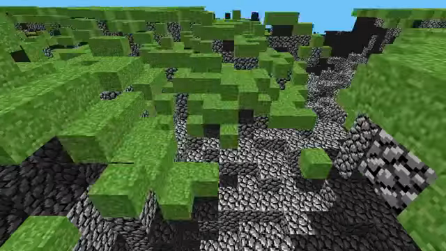

The History of Minecraft
In The "pre-classic" period, only Notch and a couple of private testers from various IRC channels played and tested the game.
Originally users would play the game as a java applet at http://www.mojang.com/notch/minecraft but Notch quickly moved the game to minecraft.net
Notch uploaded a few videos in this time period, the videos eventually got geographically blocked in around 2017.
Paul Eres names the game "Minecraft: Order of The Stone" but notch quickly shortens it to just "Minecraft". There were various other suggestions for the name that never got used. (Though "Order of The Stone" was later used as a name for a Minecraft spinoff game made by Teltale Games)
During the early classic period TIG user Evil-Ville was the earliest known person to record a video during this time, recording version 0.0.9 but the video and channel both got deleted in some time around 2011. Evil-Ville was contacted but the video was not recovered, he did describe the contents in the video that matched a 0.0.9 screenshot posted in the IRC.
May 13th, 2009, 16:48:38 UTC:
Date developed: May 10 - May 11/May 13, 2009
Version: rd-131648
Notch discusses the game (then known as Cave Game) in the #LWJGL IRC channel.
rd-131648 is the first unreleased version of Minecraft pre-Classic (then known as Cave Game) created on May 13, 2009 at 16:48 UTC.[1] This version was never released to the public, and there isn't any footage either. Despite the fact that the development of Minecraft began some time before this version, on May 10, 2009 or arlier, older testimonies are not considered separate versions, as they were extremely unstable and completely unplayable.
May 13th, 2009, 16:48:38 UTC:
Date developed: May 10 - May 11/May 13, 2009
Version: rd-131655
rd-131655 is the second unreleased version officially known as Cave game tech test [1] or Cave Game tech demo[2]. It was made on May 13, 2009, at 16:55 UTC.[3] This version was never released, but was recorded by Notch from around 17:00 UTC and uploaded at 17:36.[4] It is the earliest known version of Minecraft, or what was then known as Cave Game, to have been recorded. Development of these versions started around May 12 at the latest[5] and continued up to May 13, 2009. Features were added that would be later seen in the Cave game tech test video released on May 13, 2009.
Additions:
Blocks
Air
- Not listed as a block at this time.
Grass block
- Made with the same graphics from RubyDung.
- Its texture at this time would later be repurposed for cobblestone.
Non-mob entities
Player
- Currently has no model.
- Has a height of 1.7 blocks.
World generation
Chunks
- Take about 1⁄10 of a second to generate.
- The size of each chunk was 16×16 blocks.
- Chunks are 16×16 blocks instead of 8×8 because 8×8 chunks decreased performance.
- Chunks are loaded in order of their proximity to the player.
- The player spawns in a 256×64×256 tile map.
- The game takes 20 seconds to generate a 256×64×256 map.
- It was possible to fall out of the world, but it would not kill the player.
Caves
- Reached down until a few blocks before the last layer of cobblestone, making a ravine.
General
Lighting
- The lighting engine in Classic and Pre-Classic was simple, with only 2 light levels, bright and dark. "Sunlight" is emitted by the top edge of the map and hits any block that is under it, regardless of distance. It passes through transparent blocks to light blocks underneath. Blocks that do not receive light are in a dim shadow that remains at the same level of brightness no matter how far they are from a light source. Blocks which are darkened also have a layer of thick, black fog applied to them, appearing darker when looked at from further distances.[verify] This caused weird visual glitches.
Creative mode
- This was an extremely basic version of it. The player could not fly or place/remove blocks and there was no inventory or hotbar to get them from.
Respawning
- The player can respawn by pressing R, teleporting them to the world they were in.
Video
May 13th, 2009, 20:11:XX UTC:
Date Developed: May 13, 2009
Version: rd-132211
The first released pre-Classic version was made on May 13, 2009, at 20:11 UTC.[1] It is the oldest version available in the Minecraft launcher and the current oldest archived version of Minecraft. The copy in the launcher is recompiled from source code, with dates edited to May 13, 2009, making it technically not original.
Additions:
Blocks
- Placing and destroying blocks: Left-clicking places a block. Right-clicking destroys a block.
- Blocks cannot be placed past the existing border.
- Players can place blocks on the space they are occupying.
- Added a flashing white overlay that displays on the side of a block that the player has their mouse over.
General
- The level can be saved by pressing "Enter".
- It will also save when closing the game.
Changes:
Blocks
- Block types are handled depending upon where they are located within the world, as opposed to later versions where any block can be placed anywhere. Blocks at the same level as grass block turn to grass blocks and blocks at the same level as stone or air turn to stone.
World generation
- Level generation improved to be not so messy and random (as shown in the Cave game tech test video), but instead completely flat.
- The World generated is a cuboid of 256×256×42 blocks, with a maximum height of y=64.
- The world is full of stone up to y=41, only grass at y=42 and nothing for the remaining part.
Trivia:
- The "rd" before the version number old_alpha rd-132211 stands for RubyDung, a game Notch was working on before Minecraft, whose codebase was later reused for Minecraft.
- Holding down R causes the player to cycle rapidly through respawn locations above the level until it is released.
- Level data is saved in a single level.dat file inside the launcher folder, unlike future versions which have dedicated folders.
May 13th, 2009, at 21:28:XX UTC:
Date developed: May 13, 2009
Version: rd-132328
rd-132328 is a pre-Classic version made on May 13, 2009, at 21:28 UTC.[1] It is available in the launcher. The copy in the launcher is recompiled from source code, with dates edited to May 13, 2009, making it technically not original.
Additions:
Mobs
Mobs
- Run randomly around the map with no proper AI or movement animation.
- The first mob to be added into the game.
- 100 spawn at random positions upon world generation and loading.
- Does not save into the level.dat file
- Once the world is closed and reopened, all mobs previously there would have despawned and new ones would spawn in.
- Reused from Zombie Town, an abandoned project made by Notch before Minecraft.
- Are referred to as zombies in the code.
Trivia
- This version contains unused functionality that will cause the player to slowly rise up to ground level if they spawn under the world. However, it is not possible to spawn under the world without modding, hence why it is unused.
- The "rd" before the version number stands for RubyDung, a game Notch was working on before Minecraft, whose codebase was later reused for Minecraft.
- The oldest publicly known Minecraft world level is for this version. (ez's level.dat)
May 15th, 2009, at around 22:25:16 UTC:
Release date: May 15, 2009
Version: rd-20090515
rd-20090515 is a pre-Classic version made on May 15, 2009, around 22:25:16 UTC.[1][note 1] This version was never released. While there is a version labeled "rd-20090515" in the launcher, it is merely a mislabeled duplicate of rd-161348.
Additions:
Blocks
Dirt
- New block.
- Generated from grass blocks.
- Transforms to grass when is next to a grass block.
Cobblestone
- Has a slightly modified texture of the previous texture for stone.
Planks
- New wood-like block.
General
Miscellaneous
- Spawn mobs by pressing G.
- Block picking using the number keys from 1 to 4.
- Support for different block types and dynamic blocks.
- Fullscreen mode.
- Crosshair (+).
- In this version, it was very thin.
- A thin layer of fog can now be seen in the distance of lit block surfaces.
- The currently selected building block will now display in the top-right corner of the screen.
Changes
Blocks
Grass block
- Top texture is slightly brighter.
- Grass blocks now have side and bottom textures, rather than the same texture on each side.
- Grass exists on dirt while under light.
- Grass blocks revert to dirt over time when they have no light.
- Grass blocks revert to dirt when a block is on top of it.
- Removed the ability to place grass blocks legitimately.
Stone
- New texture, old texture was recycled and modified for cobblestone.
Mobs
Mob
- Reduced the number of mobs who spawn from 100 to 10.
- Mobs who fall below level Y = -100 are now removed from the world.
- Mobs now appear darker when in shade.
Player
- Changed player's physics. Now they can jump farther, walk and fall faster.
General
Physics
- Shadows have been brightened.
Level generation
- Unless a level.dat from an older version is launched, the world is no longer flat.
- Loading a world from older pre-Classic versions causes all blocks to become stone.
Movement
- Moving is much slower when in midair.
Trivia
- This version is the version shown in the "Minecraft progress." video.
- The game was renamed from "Cave Game" to "Minecraft: Order of the Stone" prior to this version.[3]
- The "rd" before the version number stands for RubyDung, a game Notch was working on before Minecraft, whose codebase was later reused for Minecraft.
- There was a version in the launcher titled "rd-20090515" (an alternative name for this version), however, rd-20090515 is not on the Minecraft download servers, as attempting to download it will download rd-161348 instead, a much later version.
Gallery
May 15th, 2009, 22:52:XX UTC
Release date: May 15th, 2009.
Version: rd-160052
rd-160052 is a pre-Classic version made on May 15, 2009, at 22:52 UTC.[1][note 1] It is available in the launcher. The copy in the launcher is recompiled from source code, with dates edited to March 2009, making it technically not original. Additionally, it appears to be tampered with further in order to make the game run in fullscreen by default.
Additions:
Non-mob entities
Particles
- Added "block particle" entities.
- They appear when blocks are broken.
- Fall to the ground before disappearing.
Bugs
- When alt-tabbing the GUI disappears (Linux).
- Rendering glitches occur every so often over time, due to misaligned vertex arrays.
Trivia
- The name of the game is changed from "Minecraft: Order of the Stone" to simply just "Minecraft".
- The "rd" before the version number stands for RubyDung, a game Notch was working on before Minecraft, whose codebase was later reused for Minecraft.
- When taking a screenshot with PrintScreen, it will take a screenshot of the frame that the program first showed on the screen. Each time the player runs or alt-tabs into the program, it updates that image in memory. When the player hits print screen, it doesn't take what's shown on the player's screen, but for some reason pulls it from that memory.
Gallery
May 16th, 2009, at 11:48 UTC.
Release date: May 16th, 2009
Version: rd-161348
rd-161348 is a pre-Classic version made on May 16, 2009, at 11:48 UTC
A version called "rd-161348" is available in the launcher. However, it is recompiled from source code with dates edited to March 2009 and also contains a terrain.png from Classic version 0.0.13a and signature files from 2013.
This version is duplicated in the launcher, as attempting to play rd-20090515 will instead download rd-161348
Additions:
Blocks
Saplings
- Pressing 6 will select it.
- It was not on 5, and nothing was on it, as Notch disliked the texture, trying to hide it
Blocks
Wood planks
- Pressing 6 will select it.
World Generation
- Cliffs are now much more common.
- Objects in the distance appear a tiny bit darker.
Texture
- The launcher variant of this version uses textures from later versions.
Gameplay
- Particles now follow the player's location (a player facing up will see the full particle rather than a sliver of the side).
Miscellaneous
- Made the crosshair graphic thicker.
- The block preview in the top-right corner of the screen has been flipped.
Fixes
- Fixed rendering glitch where the world became invisible at certain angles.
Trivia
- The terrain.png file for this version is dated May 21, 2009 03:02 UTC+2[note 1] (in Sweden), which is after this version was released. The textures in this version are replaced with ones from Classic 0.0.13a.
- Classic 0.0.14a_08 was released on May 28, 2009 and Classic 0.0.13a was released May 22, 2009.
- The terrain.png in Classic 0.0.13a is bit-for-bit identical to the one in this version.
- The "rd" before the version number stands for RubyDung, a game Notch was working on before Minecraft, whose codebase was later reused for Minecraft
- This is the last version to use this.
- This is the first version that has been duplicated in the launcher.
Notes
The char.png and terrain.png files in the launcher's variant of this version have last-modified times of 21:25:46 and 03:03:00, respectively, in UTC+3. In char.png and terrain.png files from nearby versions that are identical to those in rd-161348, their last-modified times are exactly an hour earlier, i.e. UTC+2. Since time zone changes do not affect jar file contents, the launcher's rd-161348 is a repackage of the original rd-161348, during which a time zone change affected its loose files.
The variant of rd-161348 from the launcher uses textures from Classic 0.0.13a, so its sapling texture is Oak Sapling JE2.png.
May 17, 2009, 16:34:37 UTC:
jwaap posts a screenshot in #TigIRC.
{kind=link}
May 17th, 2009, 04:24:07 AM
Notch announces Minecraft to the world in a TIGForums thread.
On the post he posted:
It's an alpha version, so there might be crashes. You can read some background and insight on my blog available from the game page.
The main inspiration for this game is Infiniminer, but it's going to move in a more Dwarf Fortress way, gameplay wise. =)
The post also had an attached image:
May 17th, 2009, 05:13:32 AM
Posted by muku

May 17th, 2009, 05:17:32 AM
Posted by increpare
increpare posted a screenshot of his tower and "bridging" since sneaking was not added yet this is the best the players of the time could do.


May 17th, 2009, 05:21:59 AM
Posted by Evil-Ville
Here's a video of a castle I made
http://www.youtube.com/watch?v=3XpSaBZchEs
Also a screenshot
May 17th, 2009
Posted by jwaap
minecraft
YouTube description:
I made a weird construction that wasn't screenshottable
minecraft is an awesome java game that's still very early made by notch
http://www.mojang.com/notch/minecraft/Commentary:
This is the oldest surviving minecraft video not uploaded by Notch.
May 17th, 2009, 06:54:48 AM
Posted by jwaap
{kind=link}
{kind=link}
{kind=link}
He also shared a link to "mariominecraft awesome"
mariominecraft awesome
May 17th, 2009, 07:17:32 AM
Posted by Bood_War
 Unarchived screenshot
Unarchived screenshot
May 17th, 2009, 09:12:24 AM
Posted by Navineous

May 17th, 2009, 10:24:20 AM
May 17th, 2009, 10:33:42 AM
Posted by jwaap
Jwaap shares minecraftcurl video as a reply
minecraftcurl
Uploaded by jwaap/Jan Willem Nijman on May 17th 2009.
May 17th, 2009, 04:34:19 PM
Posted by vdgmprgrmr

May 17th, 2009, 08:46:41 PM
Posted by Mr. LL

May 18th, 2009, 12:13:47 AM
Posted by vdgmprgrmr

May 18th, 2009, 06:17:56 AM
i think i'm the person that named this game (in irc, we kept throwing out names and you liked minecraft)
anyway, my experience with this game is that i only played it once: i dug myself really really deep into the earth in a single hole, and couldn't jump out so i got scared. it took me like half an hour to dig myself back out, and was amazed to see sunlight again. after that i was so relieved to be out of that hole and so scared of getting myself trapped in such a place again that i had to leave the game in triumph.
May 18th, 2009, 01:39:11 PM
Posted by MisterX

May 18th, 2009, 03:06:22 PM
Posted by MisterX

May 18th 2009, XX:XX:XX PM
Where Is Everyone?
Posted by mandelbrotflower
YouTube description:
The start of a village I built in Minecraft, plus some cave exploring. I wrote a story, about a traveler coming to visit the valley, but I had much more of the village and an extensive castle still to build. I got sick of keeping firefox open to preserve my work, so I recorded this as a sort of first draft. Maybe when Minecraft has a save option and multiplayer I will finish. The caves and the terrain were all as generated by the game.
May 18th 2009, XX:XX:XX PM
Playing around in pre-alpha minecraft
Posted by ipokesnails
May 18th 2009, XX:XX:XX PM
Minecraft Alpha Gameplay
Posted by NickdeBey
YouTube description:
http://www.minecraft.netA very fun creative game I tried out. Even though it's in alpha it's still fun
May 18th 2009, XX:XX:XX PM
Minecraft - Mob Pit o' Doom
Posted by Telkir
YouTube description:
I honestly don't know why I made two takes. If it was to avoid falling in the pit by accident then... I failed.
Anyhow, Minecraft rocks. Can't wait for multiplayer!
Thanks to everyone who's watched and enjoyed this video for making it so popular!
MUSIC: daXX - Cebit ´90 Demo - Cream of the Earth
May 19, 2009, 07:04:29 AM
Posted by Morre

http://www.x2d.org/misc/wipCastle11.png <-- changing the number gives a new screenshot
May 19, 2009, 10:46:04 AM
Posted by Zolyx

May 19, 2009, 11:38:58 AM
Posted by MisterX

May 19, 2009, 04:49:47 PM
Posted by Notch

May 19, 2009, 04:50:22 PM
Posted by vdgmprgrmr

May 19, 2009, 06:09:58 PM
Posted by MisterX
MisterX posted 3 unarchived screenshots.
May 19, 2009, 10:51:38 PM
Posted by Diggum


May 19th 2009
Posted by terribletriojoe
Minecraft Castle
May 20, 2009, 07:30:04 AM
Posted by Zolyx

May 20, 2009, 02:12:50 PM
Posted by Zolyx


May 20th 2009
Posted by Telkir
Minecraft - Lava Prison
May 20, 2009, 07:56:52 PM
Posted by lulzapricot

May 20, 2009, 10:54:43 PM
Posted by Super-Dot
May 21, 2009, 07:04:16 AM
Posted by Notch
Minecraft: Huge level, teaser of 0.0.13a
May 21, 2009, 07:55:59 AM
Posted by MisterX
Shipwrecked in Minecraft
Uploaded by Syreion on May 21st 2009.
May 21, 2009, 11:49:36 AM
Posted by Notch
I set up a channel for minecraft on irc
irc.esper.net #minecraft
There's not much going on there at the moment, so it's a great place to idle.
May 22, 2009, 10:34:43 AM
Posted by Notch
0.0.13a is up at http://www.minecraft.net/
Level saving, level loading!
May 22nd 2009, XX:XX:XX AM
Posted by 8BitLord
Temple of Minecraft
May 22nd 2009, XX:XX:XX AM
Posted by terribletriojoe
Minecraft Mob
May 22nd 2009, XX:XX:XX AM
Posted by 8BitLord
Minecraft gameplay
May 22nd 2009, XX:XX:XX AM
Posted by carlz0r
Let's Build in Minecraft!
May 22nd 2009, XX:XX:XX AM
Posted by gnomium41
minecraft mob invasion
YouTube description:
A cool upcoming indiegame.
more cool stuff on http://nightwire.de.vu
Commentary:
Notch left a comment on the video with his Nizzotch account.
May 22nd 2009, XX:XX:XX AM
Posted by T3rminator
Minecraft Church
May 22nd 2009, XX:XX:XX AM
Posted by andystartedthefire
Minecraft 00.12a_03 Fun
YouTube description:
Oh the joy
May 24, 2009, 12:06:30 AM
Posted by Zolyx

May 24, 2009, XX:XX:XX AM
Posted by MrBrax
Minecraft mobs
YouTube description:
I do read all the comments, but i'm pretty tired of people who ask how i did it. It's an old minecraft copy that i saved a long time ago.
Well, this was a long time ago, long before multiplayer existed, and there were only mobs! Exploiting time!
Woo, 20.000 views!
16/12/10 - 30.000
May 24, 2009, XX:XX:XX AM
Posted by MrBrax
Oh christ
May 27, 2009, XX:XX:XX AM
Posted by ChazDragoon
Welcome to ChazLand
Uploaded by ChazDragoon on May 27th 2009.
YouTube description:
This is all Mastatsan's fualt.. i saw his video on MineCraft and it's been like crack. =/
Anyways i built this town..it took awhile but i enjoyed it.
Best thing i can say about Minecraft..it's like playing in LEGOs! Build the world or buildings.. XD
I'm still working out the details... =P
Commentary:
Somebody recreated his build.
May 31, 2009, XX:XX:XX AM
Posted by Telkir
Minecraft Multiplayer - So it begins...
YouTube description:
Some video footage of the very first multiplayer test of Minecraft - so awesome it caused the server to explode, triggering a power blackout in a 50-mile radius around Notch's home!
Sorry not to have more coverage of what people were building. I was a little busy with my own traditional circular tower, and before I had chance to do a proper walkaround of what people had built, the blackout struck :(
The test lasted slightly over 30mins with a few crashes and restarts along the way - it was frantic, and incredible to see so much being built (and destroyed - silly griefers) in such a short time!
Thanks to everyone who took part, especially Notch for the continued fantastic work!
Minecraft in 2010
Paul Spooner
https://www.peripheralarbor.com/minecraft/minecraftscriptphotojournal.html
Notable Minecraft players:
Notch
The creator of Minecraft.
Archived Minecraft worlds/levels:
| 2009 | May | ez's level.dat |
|---|
Archived Minecraft IRC logs:
| RinkuHero's logs | LWJGL IRC's logs | testvan's logs | Rotab's logs | DBN's logs | Adura's logs | Miclee's logs | DigiDoggi's logs | Uniju's logs | Scaevolus's #risucraft logs |